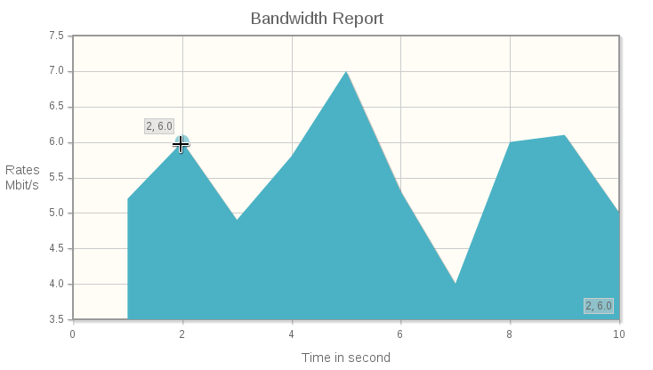

JqPlot : charts and graphs for Jquery

You want to add some fancy charts and graph to your webpage, backend...? So, you have to consider Jqplot, it's a JQuery plugin which have many advantages : - Open source, free to use and maintained by Chris Leonello (Bitbucket page) - based on JQuery - highly customizable (bars, pies, lines, colors, axis text, etc) - well documented
A simple, quick example
In your header :
<!-- JQuery -->
<script class="include" type="text/javascript" src="YOUR_PATH_TO /jquery.min.js"></script>
<!-- Jqplot -->
<!--[if lt IE 9]><script src="excanvas.js"></script><![endif]-->
<link rel="stylesheet" href="YOUR_PATH_TO jqplot/jquery.jqplot.css" />
<script src="YOUR_PATH_TO jqplot/jquery.jqplot.min.js"></script>
<script src="YOUR_PATH_TO jqplot/plugins/jqplot.canvasTextRenderer.min.js"></script>
<script src="YOUR_PATH_TO jqplot/plugins/jqplot.canvasAxisLabelRenderer.min.js"></script>
<script src="YOUR_PATH_TO jqplot/plugins/jqplot.highlighter.min.js"></script>
<script src="YOUR_PATH_TO jqplot/plugins/jqplot.cursor.min.js"></script>
The script part :
<script type="text/javascript">
var stats = [[1,5.2],[2,6],[3,4.9],[4,5.8],[5,7],[6,5.3],[7,4,8],[8,6],[9,6.1],[10,5,9]];
$(document).ready(function(){
var plot1 = $.jqplot ('bwchart', [stats],{
title: 'Bandwidth Report',
// Turns on animation for all series in this plot.
animate: true,
// Will animate plot on calls to plot1.replot({resetAxes:true})
animateReplot: true,
// Set default options on all series
seriesDefaults: {
fill: true
},
// axes specs
axes: {
xaxis: {
label: 'Time in second',
labelRenderer: $.jqplot.CanvasAxisLabelRenderer,
pad: 0,
min: 0
},
yaxis: {
label: 'Rates in Mbit/s',
labelRenderer: $.jqplot.CanvasAxisLabelRenderer
}
},
highlighter: {
show: true,
sizeAdjust: 7.5
},
cursor: {
show: true,
zoom: true,
constrainOutsideZoom: false
}
});
</script>
And the result is

Comments